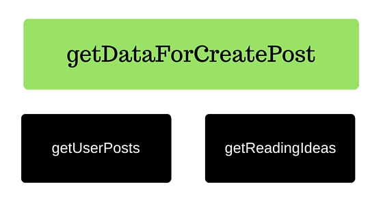

Wishful thinking - a programming skill that every entrepreneur should learn
Wishful thinking in the programming practice where a program extracts all complexities. Using this one will have a much easier time solving the sub-problems.

Wishful thinking is a programming practice where a programmer abstracts out all complexities.
As an entrepreneur when you are taking that leap towards a goal or strategy, a lot of times one has the urge to have as much implementation detail of each piece to feel comfortable sometimes that urge itself becomes a big barrier to start.
Here is a simplified example of how a programmer might abstract some of the things if we were building the published post featured on LinkedIn.
Here I can abstract out most of the sub-problems and expand on the one. Once I am done with getDataForCreatePost, I can then move to
implementing a solution for the next problem.

PostService {
def getUserPosts(User user) {
return [];
}
def getReadingIdeas() {
return [
'Wishful thinking for entrepreneurs',
'Introduction to Grails for Ruby On Rails developer',
'Deming's Philosophy - Continuous Improvement'
]
}
def getDataForCreatePost() {
return [ideas: getReadingIdeas(), userPosts: getUserPosts()];
}
}
In the above example, I have abstracted out getUserPosts and getReadingIdeas by simply
returning a fixed set of values (i.e. hard coded). I can now focus on implementing getDataForCreatePost
Let's take a look at using Wishful Thinking applied to a business problem, "Making hiring inbound". Let's first divide
the problem into few sub-problems
- Relevant technical blogs so developers can find us
- How to videos
- Interesting programming challenges for developers to solve and submit for being considered for engineering roles
I can abstract or stub out most of these and then expand on one. For example:
- Source relevant technical articles by others, to share on company LinkedIn page
- Source "How To" videos to share on all our social channels
- Provide a link to a public Google spreadsheet with a list of challenges developers can play with
Now all these abstracted/stubbed out solutions don't really solve the problem completely but get us somewhere closer.
Now I can pick one of the above sub-problem that is a higher priority and dive into breaking it down further.
If you practice Lean Startup some of this might sound familiar. When building a Concierge MVP you will really need to bring your "A" game in abstraction.
Would love to hear your experiences using brain tricks to move faster.